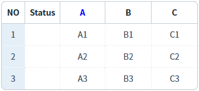
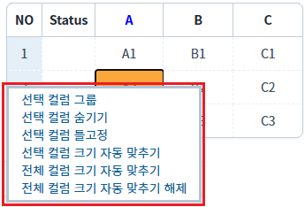
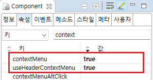

GridView의 'oncontextopen' 이벤트를 설정한 예제입니다. 이 이벤트는 컨텍스트 메뉴가 열릴 때 발생합니다. 이벤트 핸들러에서 클릭된 셀의 'row index', 'column index', 'focuced cell info', 'header info'를 확인할 수 있습니다.
이 이벤트는 GridView의 속성 contextMenu="true" 또는 useHeaderContextMenu="true"가 설정되어야 합니다.
oncontextopen 이벤트 발생 시 로그 출력하기
1
STEP 1: 초기 상태 확인하기
GridView의 rowNum, rowStatus 기능이 활성화되었고, 컨텍스트 메뉴 사용이 설정되었습니다.
Image 1.브라우저(Chrome) 실행 예시

2
STEP 2: 두 번째 행의 'A' 컬럼 셀 위에서 마우스 오른쪽 버튼을 클릭합니다.
3
STEP 3: 실행 결과를 확인합니다.
두 번째 행의 'A' 컬럼 셀이 선택되고 컨텍스트 메뉴가 표시됩니다.
Image 2.브라우저(Chrome) 실행 예시

oncontextopen 이벤트가 발생되고 이벤트 핸들러가 실행되어 로그가 출력됩니다. 예제 영역 '로그 확인' 또는 브라우저의 개발자 도구의 콘솔(console)탭에 출력된 로그를 확인합니다
Example 1.Log
[14:49:35] ** scwin.grd_exam1_oncontextopen **
row index : 1
column index : 0
body focused cell info : [{"rowIndex":1,"colIndex":0}]
header info : {"isHeader":false}1
STEP 1: GridView의 속성을 정의합니다.
컨텍스트 메뉴 기능을 사용하기 위해 아래의 속성을 설정합니다.
[필수] contextMenu="true"
바디 영역에 컨텍스트 메뉴 사용
또는
[필수] useHeaderContextMenu="true"
헤더 영역에 컨텍스트 메뉴 사용
Image 3.웹스퀘어 스튜디오의 Component View - 속성 설정 예시

Example 2.Source
<!-- gridView 의 소스 본문 예시 --> <w2:gridView useHeaderContextMenu="true" contextMenu="true" id="grd_exam1"> <!-- 중략 --> </w2:gridView>
2
STEP 2: GridView의 oncontextopen 이벤트의 핸들러를 정의합니다.
예제 파일에서는 핸들러로 사용할 메소드명을 'scwin.grd_exam1_oncontextopen'으로 설정하였습니다.
Example 3.Script
//GridView grd_exam1의 oncontextopen 이벤트 핸들러 scwin.grd_exam1_oncontextopen = function (rowIndex, colIndex, arrJsnFocusedCell, jsnHeaderInfo) { console.log(rowIndex, colIndex, arrJsnFocusedCell, jsnHeaderInfo); //header cell에서 열린 경우 rowIndex 값은 -1 입니다. if (rowIndex == -1) { //header cell에서 열린 경우 switch (jsnHeaderInfo.headerId) { case "_headerRowNumber": //컬럼 rowNum console.log("header rowNum"); break; case "_headerRowStatus": //컬럼 rowStatus console.log("header rowStatus"); break; default: break; } } else { //body cell에서 열린 경우 switch (colIndex) { case "rowNum": //컬럼 rowNum console.log("body rowNum"); break; case "rowStatus": //컬럼 rowStatus console.log("body rowStatus"); break; default: break; } } };
contextMenu
useHeaderContextMenu
oncontextopen